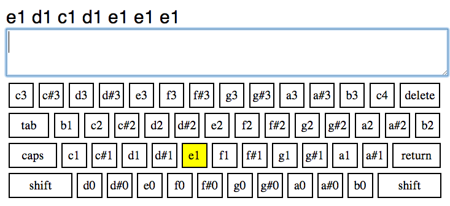

In this task, we will have you try out a "virtual piano tutor", which teaches you the basics of playing music using your computer.
In this task, we will turn your keyboard into a musical instrument, by assigning notes to each of the keys. You will be shown a list of notes to play, and you will play them by pressing the corresponding keys on your keyboard. In the example below, the "g" key on the keyboard corresponds to the "e1" note, so you would press "g" to play it.

In this example, once you have played the "e1" note by pressing the "g" key, the next note is "d1", which you play by pressing the "d" key, then you play "c1" by pressing the "a" key, etc. Once you have played back notes, it will advance on to a new set of notes for you to play, as shown below:
If you play the wrong note (ie, if "e1" was the next note in the sequence but you played "d1" instead), then the note you incorrectly played will be ignored, but you will need to repeat the line. Once you are able to play the line of notes without making any mistakes, it will advance on to the next line.
Your objective is to play back the notes you are shown as quickly as you can, without making mistakes. The faster you play, the faster you'll be able to advance through the lines of music and finish the task. Once you are done playing all the lines of notes we give you, you will be given a code that you can enter here, allowing you to submit the HIT.